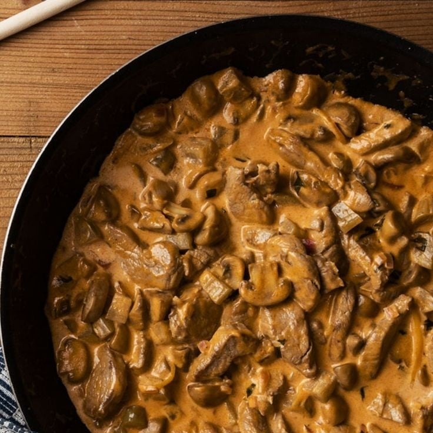

Receita de Strogonoff de Carne

Descrição
Receita de Strogonoff de Carne, com molho à base de NESTLÉ Creme de Leite e MAGGI Caldo Carne. Bora Preparar!
Igredientes
- 500 g de carne em tiras finas
- 1 pitada de pimenta-do-reino
- 3 colheres (sopa) de manteiga
- meia cebola picada
- 1 tablete de MAGGI® Caldo Carne
- 4 colheres (sopa) de água fervente
- meia xícara (chá) de conhaque
- 200 g de champignons em conserva fatiados
- 3 colheres (sopa) de purê de tomate
- 1 colher (sopa) de mostarda
- 2 colheres (sopa) de ketchup
- 1 lata de NESTLÉ® Creme de Leite
Modo de Preparo
- Em um recipiente, misture a carne com a pimenta-do-reino.
- Em uma frigideira grande, derreta 2 colheres (sopa) da manteiga e doure a carne, aos poucos, em fogo alto
- Retire a carne e coloque a manteiga restante
- Refogue a cebola, junte a carne, acrescente o MAGGI Caldo e a água fervente e mexa bem até dissolver.
- Despeje o conhaque, espere aquecer e incline levemente a frigideira para flambar o conhaque.
- Aguarde acabar a chama. Junte os champignons, tampe a frigideira e deixe por alguns minutos.
- Acrescente o purê de tomate, a mostarda e o ketchup, misture bem
- Abaixe o fogo, deixe por cerca de 5 minutos, com a frigideira tampada.
- Incorpore delicadamente o NESTLÉ Creme de Leite e retire do fogo antes de ferver. Sirva